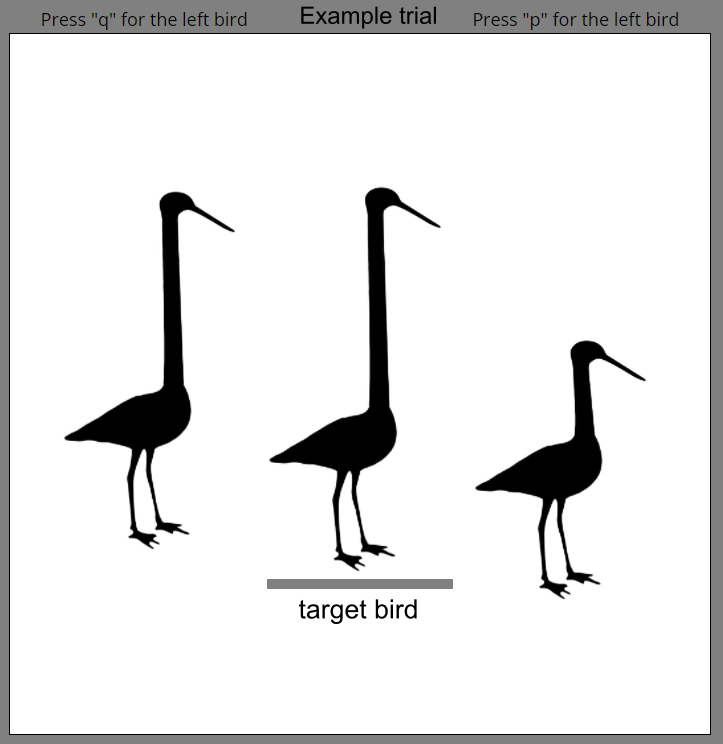

<!doctype html>
<html lang="en">

<head>
	<meta charset="utf-8">
	<meta name="viewport" content="user-scalable=no, width=device-width, initial-scale=1.0">
	<title>Instructions</title>
	<script src="jspsych-6.3.1/jspsych.js"></script>
	<script src='./jspsych-6.3.1/plugins/jspsych-instructions.js'></script>
	<script src='./jspsych-6.3.1/plugins/jspsych-html-slider-response.js'></script>
	<script src="jatos.js"></script>
	<link rel="stylesheet" href="jspsych-6.3.1/css/jspsych.css" type="text/css">
	</link>
	<link rel="stylesheet" href="./extra_files/custom.css" type="text/css">
	</link>
</head>

<body>
	<script>

		//start timeline
		jatos.onLoad(function () {


			//make a timeline
			let timeline = [];

			// Define pages for phase 1
			let instruction_pages = [
				'<div class= "header">' +
				'<h1> Instructions </h1>' +
				'</div>' +
				'<div class="instruct">' +
				'<p>Welcome to the experiment!</p>' +
				'<p>You will do a total of 3 tests:</p>' +
				'<li>Similarity task #1</li>' +
				'<li>Same/difference task</li>' +
				'<li>Similarity task #2</li>' +
				'</div>',

				'<div class= "header">' +
				'<h1> Similarity task #1 </h1>' +
				'</div>' +
				'<div class="instruct">' +
				'<p> Lets start the Similarity task #1. <br> On each trial, you will see 3 birds next to each other, just as you see on an example screenshot below. The middle bird is the "target" bird. You have to choose which of the side-birds is more similar to the target bird. <br><br>If the left-bird is more similar to the target bird press the button q. <br>If the right-bird is more similar to the  target bird press button p.</p>' +
				'<div>' +
				'</img>' +
				'</div>',

				'<div class= "header">' +
				'<h1> Similarity task #1</h1>' +
				'</div>' +
				'<div class="instruct">' +
				'<p>You will now start with some practice trials!</p><br>' +
				'<p>On each trial, you will have ' + (jatos.studySessionData.inputData.experiment_parameters.triplet_trial_dur / 1000) + ' seconds to make your response!</p>' +
				'<p>Many of these trials will really difficult. Both, the left and right birds might be very similar to each other. <br>Do not worry if you are unsure about your response, just do your best!</p>' +
				'<p>Press next to begin the practice trials!</p>' +
				'</div>',
			];

			let instructions = {
				type: 'instructions',
				pages: instruction_pages,
				show_clickable_nav: true,
				button_label_next: '<span style="color: black"d;> <strong> Next </stong></span>',
			};

			timeline.push(instructions);

			jsPsych.init({

				timeline: timeline,

				on_finish: function (data) {

					// Make JATOS remember that this session was run
					jatos.studySessionData.latestFinishedComponentId = jatos.componentId;
					jatos.studySessionData.latestFinishedComponentPos = jatos.componentPos;
					jatos.studySessionData.latestFinishedComponentTitle = jatos.componentProperties.title;

					// Save the info in the studySessionData!

					// Record results
					jatos.submitResultData('[instructions_start_' + '---' +
						JSON.stringify(jatos.studySessionData) +
						'---' + '_instructions_end]',
						function () { jatos.startComponentByPos(jatos.studySessionData.inputData.component_positions.triplet_task) });
				}
			});

		});


	</script>
</body>

</html>